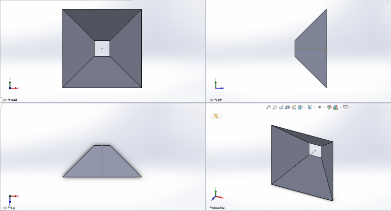
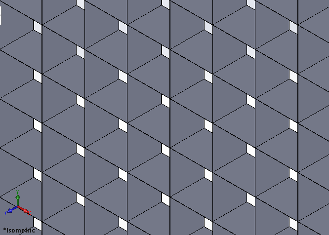
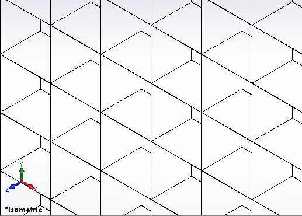

One-Way Fly Mesh Design
2018
After writing the article below, I did some more thinking. The idea below is functional, but I can't figure out how to easily produce it. I limited my thinking to wire and squares because that's the fly mesh that I'm used to. A better way of implementing this idea would be a clear plastic venetian blind. The blind would be tightly shut, behaving like a bug screen that lets wind in, but not bugs, but it could easily be opened allowing a bug out. Furthermore, the blind could be raised and lowered, thus you could open the window fully (no fly mesh in the way) much more easily. To that end, a fly mesh that rolls up via a pulley onto a cylinder that sits near the top of a window, and can be lowered down and clipped into a hook that is screwed into the bottom windowsill.
There was a fly stuck inside the house today. It kept colliding with the mosquito mesh to no avail until I opened the screen door and coaxed it out. I'm trying to think of a simple directional netting that would let bugs out but not in. Here's a thought:
So, in traditional netting, each individual square is simply a wire square. It has the same dimension on the inside and the outside. What if, instead of a wire square, we utilized all 3 dimensions and made the individual unit look like a dog cone? (See Fig. 1) The inside square is bigger in dimension while the outside square is just a tad larger than a standard mesh.
Fig. 1

So, if our meshing is made out of little units like this, bugs can't get through the outside, but they can fly out from the inside. The gradual decrease in diameter will fold their wings in and they'll pop out the other side, unable to reenter! Here's what the overall product looks like:

Now, the question is - how do we make it? Well, if we were to design it from a single strand of wire - it would look like this:

Regardless of feasibility or cost-effectiveness, I'm sure bug-kind around the world will rejoice if this meshing is ever adopted!
OK, to be honest, this idea isn't amazing. It has quite a few flaws, namely - if bugs can go out of the outer mesh, why can't they come in? My current answer is - because their wings won't be folded in, so their diameter will be too large! However, I have literally zero data to back that up, and as I've learned all too often, good will is rarely enough to make something work. Nevertheless, what's the point in daydreaming if I can't bring some of those dreams to fruition! This idea was just a nominal thought that flitted through my head like a butterfly on a hazy summer day. What's important is that instead of letting it go, I made a couple quick sketches and evaluated it. In other words, I acted on my impulse. Acting on my thoughts means more work, often with no real result. However, for every 1000 ideas that pop into my head, there's always a chance that one of them is interesting, useful, and feasible. Besides that, it's fun to work with ideas! Only in our ideas and daydreams are we truly free to explore. With the advent of AI, our ability to create is the only uniquely human characteristic that we have left. Ideas are the gold of tomorrow.
I figure the best time to write a snarky disclaimer is never, so I've written one now: